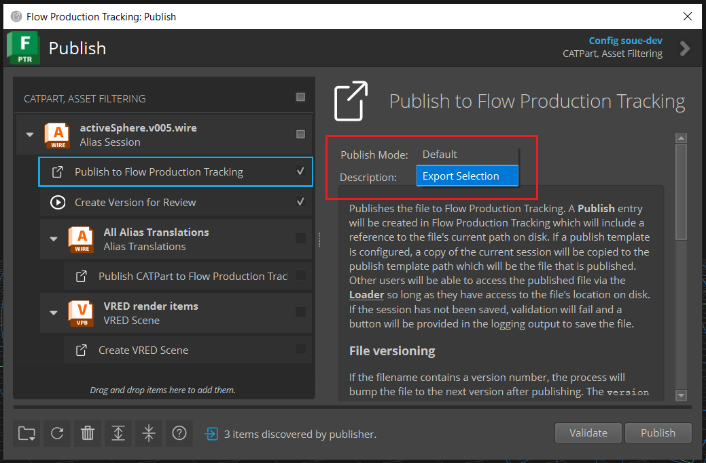

What’s New
The latest version of the Alias Engine is v4.3.0.
v4.3.0
Release highlights
Alias 2026.1 support
Update Support URL
Dependencies
Alias Framework:
tk-framework-alias v2.4.0Required for Alias 2026.1 support
Updates
Alias Python API for OpenModel (alias_api_om.pyd)
The Alias Python API for OpenModel python module (alias_api_om.pyd) is compatible with PySide6 >= 6.8.x. This means when running python and importing both PySide6 and alias_api_om, the PySide6 version must be compatible (>= 6.8.x) with the Alias Python API for OpenModel; otherwise a DLL import error will occur when attempting to import alias_api_om.
v4.2.1
Release highlights
Removed try/except sgutil blocks and ensure methods
v4.2.0
Release highlights
New engine hook to allow defining Alias Python API extension functions
Fix start up issue for Alias < 2024.0
Fix Alias crash when Alias Python API exception thrown (>=2026.0)
Dependencies
Alias Framework:
tk-framework-alias v2.3.0Required for defining Alias Python API extensions
New Features
Alias Python API Extension Functions
A new engine hook hook_alias_api_extensions has been added to allow defining Alias Python API extension functions.
What is an Alias Python API extension function?
Here is some context first, to understand what an Alias Python API extension function is:
The Alias Python API functions can be used directly through the Alias Engine (nothing has changed here); for example:
alias_engine = sgtk.platform.current_engine()
alias_engine.alias_py.create_layer("MyLayer")
When running the Alias Engine with Alias 2026.0 or later (e.g. not headless), the Alias Engine is running in a separate process to Alias, which means that Alias Python API functions are sent from the Alias Engine to Alias over Inter Process Communication (IPC). This adds overhead to each Alias Python API function call, which can cause performance issues (compared to Alias 2023 or earlier, which does not use IPC).
To address this performance issue, Alias Python API extension functions have been introduced. Users can define their own Alias Python extension functions, which will be loaded as extensions to the Alias Python API module. These extension functions will be available from the Alias Python API module in the AliasApiExtensions class, and can be called like any other Alias Python API function; for example:
alias_engine = sgtk.platform.current_engine()
api_extensions = alias_engine.alias_py.AliasApiExtensions()
api_extensions.my_extension_function()
Why use Alias Python API extension functions?
It is not required to use Alias Python API extension functions, but they can help to improve performance when making Alias Python API calls. The extension functions are executed as one IPC call, instead of one IPC call per Alias Python API function call, which can significantly improve performance.
When should I use Alias Python API extension functions?
It is recommended to use Alias Python API extension functions when:
You have a function or block of code that makes many Alias Python API function calls
You need to perform a complex operation that is not supported by a single Alias Python API function
How do I define and use Alias Python API extension functions?
There are two ways to define Alias Python API extension functions:
Create a single python file with the extension functions
Create a directory with multiple python files with the extension functions (directory can have sub-directories)
For this example, we will create a single python file with the extension functions. The high-level steps:
Write the extension functions in a python file
Create a new hook file to override the default hook method
get_alias_api_extensions_pathUpdate the Toolkit configuration to use the custom hook
Use your extension function
Step 1: Write the extension functions
Create a new python file, let’s call it my_alias_api_extensions_functions.py. Write a simple extension function that logs a message to the Alias prompt line:
def my_first_extension_function():
"""Say hello in the Alias prompt line."""
alias_api.log_to_prompt("Hello, this is my first extension function!")
Important
Do not import the alias_api module in the python file. The alias_api module is automatically imported when the Alias Python API extension functions are executed.
An example of a more realistic use case:
def swap_surface_shaders(shader_from_name: str, shader_to_name: str):
"""Swap the shaders of the given surfaces."""
shader_from = alias_api.get_shader_by_name(shader_from_name)
shader_to = alias_api.get_shader_by_name(shader_to_name)
surfaces = [
n.surface()
for n in shader_from.get_assigned_nodes()
if n.type() == alias_api.AlObjectType.SurfaceNodeType
]
for surface in surfaces:
surface.assign_shader(shader_to)
Important
Alias Python API extension functions must be defined as global functions and their names must be unique. The functions must also be JSON-serializable.
Step 2: Create a new hook file to override the default hook method
Override the base hook by creating your own hook file, let’s call it my_alias_api_extensions_hook.py. The hook file should contain the following:
import sgtk
HookBaseClass = sgtk.get_hook_baseclass()
class MyAliasApiExtensionsHook(HookBaseClass):
"""
Hook to define Alias Python API extension functions.
"""
def get_alias_api_extensions_path(self):
"""
We will create a python file called my_alias_api_extensions.py in the directory
containing this hook file
"""
return os.path.join(os.path.dirname(__file__), "my_alias_api_extensions_functions.py")
For reference, the base hook file is located in the tk-alias/hooks/alias_api_extensions.py file:
# Copyright (c) 2025 Shotgun Software Inc.
#
# CONFIDENTIAL AND PROPRIETARY
#
# This work is provided "AS IS" and subject to the Shotgun Pipeline Toolkit
# Source Code License included in this distribution package. See LICENSE.
# By accessing, using, copying or modifying this work you indicate your
# agreement to the Shotgun Pipeline Toolkit Source Code License. All rights
# not expressly granted therein are reserved by Shotgun Software Inc.
import sgtk
HookBaseClass = sgtk.get_hook_baseclass()
class AliasApiExtensionsHook(HookBaseClass):
"""
Hook to allow defining additional Alias Python API functions that can
be executed on the server side.
This hook class should only contain a single method:
get_alias_api_extensions_path
This hook class itself should not:
- Import the `alias_api` module
- Define any methods for extending the Alias Python API
"""
def get_alias_api_extensions_path(self) -> str:
"""
Returns a file path to Alias Python API extension functions.
The file path returned can be one of the following:
- A file path to a python file containing the extension functions
- A directory path to containing python files that contain the extension
functions
The python file(s) containing the extension functions should only contain:
- Global functions that are standalone (e.g. any non built-in python
modules must be imported for each function)
- Each function must be JSON-serializable
The extension functions will have access to the `alias_api` module at
run time (e.g. do not import the `alias_api` module).
The extension functions will be made available through the `alias_api`
module in the `AliasApiExtensions` class.
Default implementation returns None, which does not add any extension
functions to the Alias Python API. Override this hook method to return
the location of your custom extension functions.
Directory Example:
# Return a directory path containing python files with extension functions
# that is located in the tk-alias/hooks/alias_custom_api directory
return os.path.join(os.path.dirname(__file__), "alias_custom_api")
Single File Example:
# Return a file path to a python file with extension functions
# that is located in the tk-alias/hooks/alias_custom_api directory
return os.path.join(os.path.dirname(__file__), "alias_custom_api.py")
:return: A directory or file path to Alias Python API extension functions,
or None if no extension functions are to be added.
"""
return None
Step 3: Update the Toolkit configuration to use the custom hook
Update your Toolkit configuration tk-alias.yml file to use the custom hook you have defined. We’ll place the custom hook file my_alias_api_extensions_hook.py in the configuration hooks directory, and update the config accordingly:
settings.tk-alias.project:
hook_alias_api_extensions: "{config}/my_alias_api_extensions_hook.py"
Note
The hook method get_alias_api_extensions_path returns the path to the directory containing the hook file; this means that the my_alias_api_extensions_functions.py file must be placedin the same directory as the hook file.
Step 4: Use your extension function
All extension functions are added as methods to the alias_api.AliasApiExtensions class. For example, to use the swap_surface_shaders function, you can call it like this:
import alias_api
api_extensions = alias_api.AliasApiExtensions()
api_extensions.swap_surface_shaders("ShaderA", "ShaderB")
The above example is shown for simplicity, but it is recommended to access the alias_api module through the AliasEngine.alias_py attribute. The extension functions can then be used like:
alias_engine = sgtk.platform.current_engine()
alias_api = alias_engine.alias_py
api_extensions = alias_api.AliasApiExtensions()
api_extensions.swap_surface_shaders("ShaderA", "ShaderB")
Tip
You can test out your extension functions by running Alias and opening the PTR Python Console.
Tip
To organize your extension functions, instead of using a single python file, you can create a directory with multiple python files, which define extension functions. You may also create sub-directories of python files containing extension functions. Remember that each extension function must be unique, even if defined in different files. To use the extension functions from multiple files, you must modify the hook method get_alias_api_extensions_path to return the path to the directory containing the extension functions.
Bug Fixes
Fixed issue with Alias < 2024.0 failing to start Alias due to using the incorrect Toolkit configuration
Fixed crash with Alias >=2026.0 when Alias Python API exception thrown; an error message will now be displayed with the Python exception information
v4.1.9
Release highlights
Improve dialog for minimum supported version of Alias
Minimum supported version of Alias is now 2023
v4.1.8
Release highlights
Alias Learning Edition is now supported
Require selection when publishing mode Export Selection is enabled
Bug fix for Loader2 App actions
New Features
Flow Production Desktop will now provide the launcher for Alias Learning Edition software, if installed
Improvements
On publish, if the Export Selection mode is enabled, the publish will require a selection to be made in Alias. The publish will not validate successfully, until at least one object is selected in the Alias scene. This is to prevent trying to publish an empty file, which will result in not creating a new published file on disk.
Bug Fixes
Fixed issue with executing Loader2 App actions (bug introduced in v4.1.5)
Reported issue for “Import as Reference” action has been fixed
v4.1.7
Release highlights
Offically support Alias 2026
Dependencies
Alias Framework:
tk-framework-alias v2.2.0Required for Alias 2026 support
Increased server-side max http buffer size to 5MB to handle larger Alias Python API requests
v4.1.6
Release highlights
Remove Python 2 support
v4.1.5
Release highlights
Background Publishing can be toggled on/off from Publish2 App UI
Improve performance when performing multiple actions at once from Loader2 App
Bug fix to correctly handle proxy servers
Dependencies
Publish2 App:
tk-multi-publish2 v2.10.3Includes update for the new publish setting option to turn on/off publishing in the background
Required to use Background Publishing with tk-alias
v4.1.5or laterConfiguration must be updated to use Publish2 App
v2.10.3or later
Alias Framework:
tk-framework-alias v2.1.3Required to fix proxy server handling
Framework is automatically updated by the engine info.yml
New Features
Background Publishing Setting
A new publish setting option has been added to the Publish2 App to turn on/off publishing in the background. This requires tk-multi-publish2 v2.10.3 or later.
To use the new publish setting:
Open the Publish2 App
Click on the root publish item Current Alias Session
Check the Settings option Perform publish in the background to run the publish in the background (or uncheck to run normally)
{kind=link}
Note
This new setting in the Publish App has replaced the Background Processing configuration setting. This setting does not need to be added to perform background publishing, the setting in the Publish2 App will handle this. You may still set the configuration setting to set the default value of the checkbox option in the Publish App.
{kind=link}
Bug Fixes
FPTR integration can be run with Alias using a proxy server. If you are using a proxy server and are still experiencing issues, see Proxy Server Troubleshooting for more information.
v4.1.4
Bug fix for showing Alias icon in Flow Production Tracking Desktop
v4.1.3
Bug fix for running Background Publishing in Alias
v4.1.2
Improve error handling on Alias start up
Improve Alias API timeout handling
v4.1.1
Release highlights
New publish mode “Export Selection”
New publish option to choose publish mode
New Features
The Alias publish plugin “Publish to Flow Production Tracking” has a new Publish Mode option:
{kind=link}
The “Default” publish mode will publish the working file as is, as it did before introducing the Publish Mode option, there is no change in behavior.
The “Export Selection” publish mode will publish only the selected objects in the Alias scene.
Note
The working file will not be changed. This means that the published file will differ from the corresponding working file version.
Warning
The “Export Selection” publish mode is not supported with Background Publishing. You must turn off the Background Processing setting in your configuration to use this publish mode. Refer to this documentation on how to turn off this setting.
By default, the “Default” publish mode is selected. To change the default publish mode, you can modify your configuration file tk-multi-publish2.yml, for example:
settings.tk-multi-publish2.alias.asset_step:
publish_plugins:
- name: Publish to Flow Production Tracking
hook: "{self}/publish_file.py:{engine}/tk-multi-publish2/basic/publish_session.py"
settings:
Publish Template: alias_asset_publish
Publish Mode: Export Selection
v4.0.1
Fix Alias Engine restart after Alias application exits unexpectedly
v4.0.0
This documentation explains the new features in the Alias Engine v4.0.0 compared to v3.3.2.
Release highlights
Improved performance overall for Alias 2024.0 and later
Improved Data Validation validation and fix operations
Improved communication and error handling with Alias
Dependencies
Data Validation App:
tk-multi-data-validation v0.3.1Required for full performance improvements
Recommneded to use the new option to turn off the app auto-refresh feature for best performance. Particularly when auto-refresh is on while switching between files (e.g. opening or importing a new file) will degrade performance.
Alias Framework:
tk-framework-alias v2.0.0Required for full performance improvements
Required for Alias Plugin and Python API updates
New Features
New Alias APIs are listed separately.
AliasPy
Added
request_context_manager()context manager to improve performance of API calls:Use the context manager to execute multiple API calls at once and retrieve the result:
# Wrap the API calls to create layers using the request context manager with engine.alias_py.request_context_manager() as manager: for i in range (100): layer_name = f"Layer{i}" # This API call will be deferred until the context manager exits engine.alias_py.create_layer(layer_name) # The context manager now on exiting the above code scope will send all # API calls in a single event, instead of 100 individual events # The result will be stored in the manager object `result` property, and it # will be a list of values returned from the API calls, in the order that the # API calls were made. for result in manager.result: print(result)See more details on how to use the context manager in the Alias Python API documentation.
AliasPyDagNode
Added
is_template()function to check if a node is a template node. ReplacesAliasPyTraverseDag.is_node_templatemethod.Added
is_instance()function to check if a node is instanced. ReplacesAliasPyTraverseDag.is_instancemethod.Added
has_zero_transform()function to check if a node has a zero transform. ReplacesAliasPyTraverseDag.node_has_non_zero_transformmethod.Added
has_non_origin_pivot()function to check if a node has pivots at the origin. ReplacesAliasPyTraverseDag.has_non_origin_pivotmethod.
Configuration
Added configuration setting
data_validation_max_error_countto set the maximum number of errors to display in the data validation dialog. If the number of errors exceeds this number, then individual error items will not be retrieved and displayed, and only the number of errors will be shown. Lowering this number can improve Data Validation App performance. The default value is 500. This configuration setting can be found in the Alias Engineinfo.ymlfile, and can be modified in thetk-alias.ymlconfiguration file.
Removed
Removed class
AliasPyTraverseDagAttribute will no longer be available from the engine
AliasEngine.alias_py.py_traverse_dag
Removed parameter
check_existsfrom the followingAliasPyDAgNodemethods:get_instanced_node()get_nodes_with_construction_history()get_nodes_with_non_zero_transform()get_nodes_with_non_origin_pivot()get_nodes_with_unused_curves_on_surface()
This affects the AliasEngine.alias_py.py_dag_node attribute; for example:
# This method no longer takes the key-word parameter `check_exists` nodes = engine.alias_py.get_nodes_with_non_zero_transform(check_exists=True) # Should now be called without the `check_exists` parameter nodes = engine.alias_py.get_nodes_with_non_zero_transform()
Removed parameter
check_existsfrom functionAliasPyLayer.get_symmetric_layers()This affects the
AliasEngine.alias_py.py_layerattribute.
Removed parameter
skip_shadersfrom functionAliasPyPickList.pick_nodes_assigned_to_shadersThis affects the
AliasEngine.alias_py.py_pick_listattribute.
v3.0.0
This documentation explains the new features in the Alias Engine v3.0.0 compared to v2.2.1.
Porting to tk-alias v3.x.x from v2.x.x
Starting in tk-alias v3.0.0, the Toolkit Framework for Alias tk-framework-alias is required. The framework now manages the Alias Plugin and Alias Python API module files for all the supported Alias versions. Starting in Toolkit configs v1.6.0, the tk-framework-alias is included.
Accessing the API with the Alias engine in v2.x.x
In tk-alias v2.x.x the Alias Python API can be accessed directly by importing the alias_api module:
import alias_api
Accessing the API with the Alias engine in v3.x.x
In v3.x.x it is still possible to import the alias_api module:
import alias_api
Note: This requires the Alias Engine to be bootstrapped and started (e.g. launching Alias from Flow Production Track Desktop will do this). If you are manually bootstrapping the Alias Engine (without Flow Production Tracking Desktop), refer to how the framework bootsraps. and starts the engine.
To maintain future compatibility, we strongly encouraged accessing the Alias Python API through the tk-alias engine property alias_py:
import sgtk
# Get the Alias engine instance.
tk_alias_engine = sgtk.platform.current_engine()
# Access the Alias Python API through the engine property `alias_py`
# Remember that engine must have been started for alias_py property to be available
alias_api = tk_alias_engine.alias_py
Accessing the API without the Alias engine
The Alias Engine does not provide access to the Alias Python API when the engine is not running. Without the engine running, the additional AliasPy modules are not available. If it is absolutely necessary to use the Alias Python API without the tk-alias engine running, and without an active Alias session(e.g. headless mode, called OpenModel), you will need to:
Add the alias_api_om.pyd file path to your
PYTHONPATH_This is necessary for import to find the Alias Python API module._
Add the Alias install bin directory to your system environment PATH
_This is necessary to find the Alias DLL files that the Alias Python API requires._
Starting in tk-alias v3.0.0, the Alias Python API files are no longer included in the engine itself, instead they are managed by tk-framework-alias, and can be found here.
Here are steps to access the Alias Python API module for OpenModel (e.g. headless mode without an Alias session running):
Open a Windows Command Prompt and ensure that the Alias DLL install path is in your system environment
PATH. If you have multiple installs of Alias, the version of Alias you want to use must appear first (in this example, it would be Alias 2025.0). You can check thePATHvalue by seeing the output of running the Windowssetcommand. You can prepend the Alias install path to your PATH with:set PATH=C:\Program Files\Autodesk\AliasAutoStudio2025.0\bin;%PATH%
NOTE: This only works for Python <= 3.9. For Python 3.9 and newer, you will need to add the Alias DLL install path from the Python interpreter. Keep following for instructions for Python 3.9.
Start a Python interpreter. We will use Python 3.7 for this example:
"C:\Program Files\Python37\python.exe"NOTE: you may need to change the above path to the python.exe you want to use.
NOTE: For Python 3.9, now add the Alias DLL install path for python to find it:
import os os.add_dll_directory(alias_dll_directory)
Add the path to the Alias Python API module for OpenModel (alias_api_om.pyd) to your
PYTHONPATH. We will use the API for Alias 2025.0, and Python 3.7 since we are running a Python 3.7 interpeter:import sys sys.path.insert(0, "C:\\Users\\<insert_username>\\AppData\\Roaming\\Shotgun\\bundle_cache\\app_store\\tk-framework- alias\\v1.4.0\\dist\\Alias\\python3.7\\2025.0")
NOTE: you will need to replace <insert_username> with your username, and make sure this is the correct path to the alias_api_om.pyd file.
Optionally, the path to the api could have also been set before starting the interpreter from the Windows Command Prompt:
set PYTHONPATH=C:\Users\my_username\AppData\Roaming\Shotgun\bundle_cache\app_store\tk-framework-alias\v1.4.0\dist\Alias\python3.7\2025.0;%PYTHONPATH%
If you do not want to hard code the Alias Python API path
C:\\Users\\my_username\\AppData\\Roaming\\Shotgun\\bundle_cache\\app_store\\tk-framework-alias\\v1.4.0\\dist\\Alias\\python3.7\\2025.0, and you have access to the Toolkitsgtkmodule and have your Toolkit context, you can programmatically find the path to the api with this function:def setup_alias_env( ctx, alias_version="2024.0", alias_dll_directory="C:\\Program Files\\Autodesk\\AliasAutoStudio2024.0\\bin", ): import os import sys import sgtk env = sgtk.platform.engine.get_environment_from_context(ctx.sgtk, ctx) desc = env.get_engine_descriptor('tk-alias') # Get the framework version from the tk-alias engine descriptor framework_and_version = None for framework in desc.get_required_frameworks(): if framework.get("name") == "tk-framework-alias": name_parts = [framework["name"]] if "version" in framework: name_parts.append(framework["version"]) framework_and_version = "_".join(name_parts) break if framework_and_version is None: raise Exception("Failed to find location for tk-framework-alias") # Get the path to the framework framework_desc = env.get_framework_descriptor(framework_and_version) framework_path = framework_desc.get_path() # Get the API path within the framework, for the Python and Alias version api_path = os.path.join( framework_path, "dist", "Alias", f"python{sys.version_info.major}.{sys.version_info.minor}", alias_version, ) if not os.path.exists(api_path): raise Exception(f"Alias Python API module not found: {api_path}") # Add the path to the api so that we can import the module sys.path.insert(0, api_path) # For Python > 3.7, we need to add the Alias bin dir to the dll directories to find the correct Alias DLLs to load the api module # For Python <= 3.7 the Alias bin dir should have been added to the system environment PATH before executing this script if hasattr(os, "add_dll_directory"): os.add_dll_directory(alias_dll_directory)
Now you are ready to import the Alias Python API:
From a command line, without Alias running, we are operating in OpenModel mode (e.g. no GUI), so we need to import the OpenModel API module:
import alias_api_om # Print help for the module help(alias_api_om) # Print the api module file location print(alias_api_om.__file__) # Execute a basic api command status = alias_api_om.initialize_universe() # If successful, you should see a return of `0` print("Alias universe initialized", status)
NOTE: when running with Alias, we are operating in OpenAlias (e.g. with a GUI), in this case we could import the API as
import alias_api
Troubleshooting
Alias Python API module not found:
ModuleNotFoundError: No module named 'alias_api_om'
This indicates that the alias_api_om.pyd file could not be found. Check that you have set your
PYTHONPATHenvironment variable orsys.pathto include the path to the alias_api_om.pyd file.Alias DLL import error:
ImportError: DLL load failed while importing alias_api_om: The specified module could not be found.
This indicates that the necessary Alias DLLs could not be found. Check that you have set your
PATHenvironment variable (for Python <= 3.7) such that the correct Alias install path appears first, or this path was added usingos.add_dll_directory(for Python > 3.7)ModuleNotFoundError: No module named ‘tk_framework_alias_utils’ (or ‘tk_framework_alias’)
This means you are attempting to import the tk_framework_alias python module. To import the Alias Python API module without the Alias engine, we do not need to import tk_framework_alias module to get the Alias Python API. Instead, follow the steps above to add the direct path to the Alias Python API module instead of tk_framework_alias, in order to import the api. You may import tk_framework_alias to access the api, but it has additional Python package dependencies that you are on your own to ensure are installed.
Ensure that the path to the tk_framework_alias python module is not in your PYTHONPATH. The tk_framework_alias python module path may look something like:
C:\Users\username\AppData\Roaming\Shotgun\bundle_cache\app_store\tk-framework-alias\v1.4.0\python. You can check your path with:set PYTHONPATH
, and update it to remove the tk_framework_alias path, if it is present:
set PYTHONPATH=<new_path_without_tk_framework_alias>
Module Changes
AliasPy
NOTE: the AliasPy modules are only available with the Alias Engine and when it has been started.
In v2.x.x the AliasPy utility modules can be accessed directly by importing from the alias_py module:
import alias_py.utils
import alias_py.dag_node
import alias_py.layer
In v3.x.x this is no longer possible. The AliasPy utility modules must be accessed through the Alias engine property alias_py:
import sgtk
tk_alias_engine = sgtk.platform.current_engine()
alias_api = tk_alias_engine.alias_py
# Previous `alias_py` attributes arenow accessed using `engine.alias_py.py_<attr_name>`
utils_module = alias_api.py_utils
dag_node_module = alias_api.py_dag_node
layer_module = alias_api.py_layer
API Changes
AlStatusCode Enum
In v2.x.x the Alias Python API status code numerical values can be retrieved by:
if int(alias_api.AlStatusCode.Success) == 0:
print("Success!")
In v3.x.x this code must be updated to use the value attribute to retrieve the numerical value:
if alias_api.AlStatusCode.Success.value == 0: print("Success!") # Or check the status by name now if alias_api.AlStatusCode.Success.name == "Success": print("Success!")